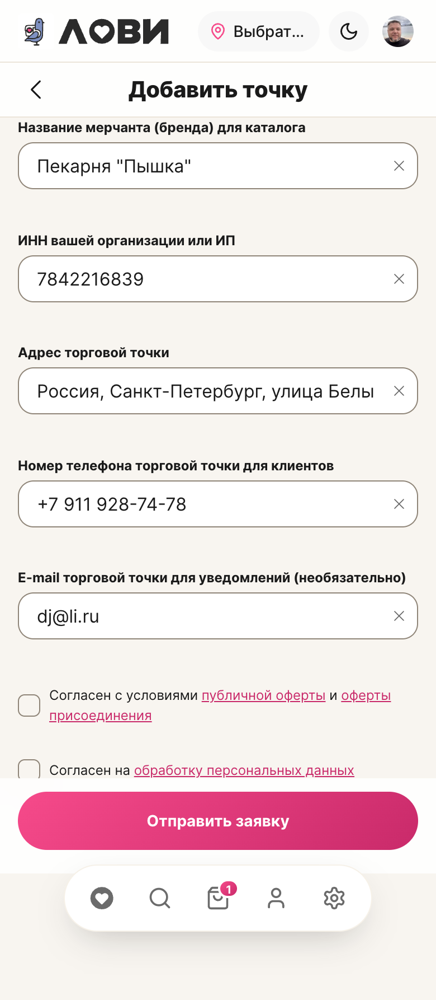

Замеры с живого экрана и сверка с нормативами ДС. Было → стало, и что осталось.
Замеры
Элемент / метрика
Норма
Факт
Боковой гуттер main
16 (--lv-pad-x)
16 ✓
Зазор формы между полями
16 (--lv-block-gap)
16 ✓
Поле: бордер
видимый, 1.5px
1px #8f8578 ✓
Поле: радиус
14 (--lv-r-md)
14 ✓
Поле: высота (тап-таргет)
≥ 44
42 — чуть ниже нормы
Подпись поля
12
12 ✓
Строка согласия (чекбокс)
≥ 44
54 ✓
Кнопка «Отправить заявку»
≥ 44, на всю ширину
358×52, pill ✓
Нижний зазор до навигации
—
72px ✓
Крестик очистки поля
≥ 44
16×15 → 32 + зона 44
Кнопка «назад» в шапке
≥ 44
40 — общая шапка
«Выбрать адрес» в шапке
≥ 44, без обрезки
36×109, текст обрезан «Выбрат…» — общая шапка
Ссылки в тексте согласий
—
15–33px (строчные ссылки в предложении)
Что исправлено
Крестик очистки полей: не имел стилей вовсе (16×15px). Задал вид и довёл зону нажатия до нормы 44px, не увеличивая саму иконку. На форме таких пять — теперь все тапабельны.
Ранее на этом экране: видимые рамки полей, заголовок в шапке по канону, высота сабхедера 49px (была 89), подсказки адреса не выкидываются при предзаполнении, кнопка на всю ширину.
Осталось — общая шапка (все экраны)
кнопка «назад» 40px и кнопка выбора адреса 36px — ниже нормы 44;
текст «Выбрать адрес» обрезается до «Выбрат…» — похоже на баг ширины, а не на замысел;
высота поля ввода 42px — на 2px ниже тап-нормы (сейчас это размер m во всей системе).
Это один общий компонент на всё приложение. Правка затронет все экраны, поэтому вынес отдельно и не трогаю молча — скажи, и приведу к норме разом.

Форма заявки: поля с видимыми рамками, кнопка на всю ширину, крестики очистки с нормальной зоной.